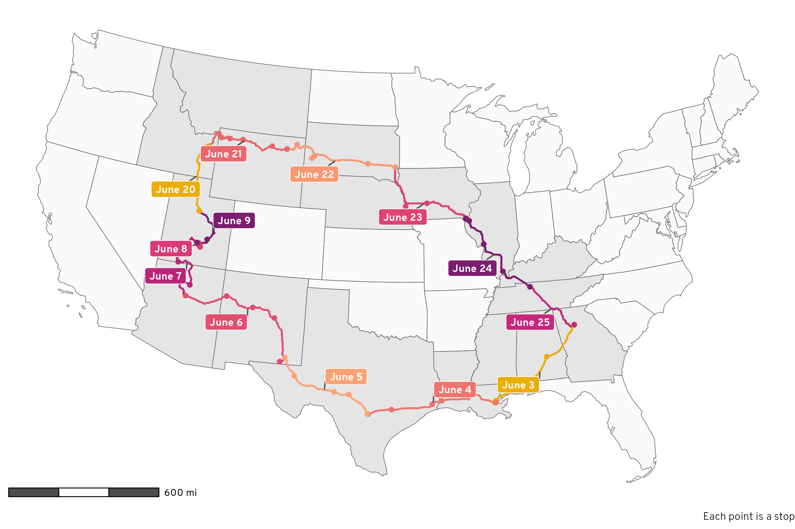
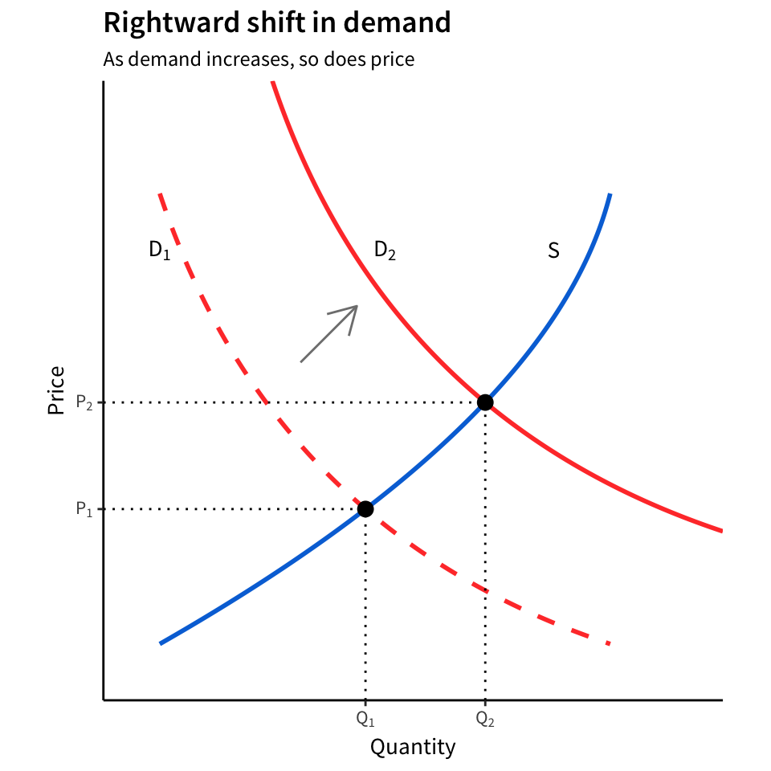

Hong T.M. Chu
About
CV
Research
Teaching
Andrew Heiss’s blog
How to use a histogram as a legend in {ggplot2}
Land isn’t unemployed—people are. Here’s how to use R, {ggplot2}, {sf}, and {patchwork} to create a histogram legend in a choropleth map to better see the distribution of values.
Feb 19, 2025
Andrew Heiss
How to move Crimea from Russia to Ukraine in maps with R
Natural Earth’s de facto on-the-ground policy conflicts with de jure boundaries. Use {sf} and R to relocate parts of country shapes.
Feb 13, 2025
Andrew Heiss
Using USAID data to make fancy world maps with Observable Plot
Manipulate geographic data, change projections, get live data from a database, and make interactive plots with Observable JS
Feb 10, 2025
Andrew Heiss
Guide to comparing sample and population proportions with CPS data, both classically and Bayesianly
Download CPS demographic data from IPUMS and use R and {brms} to calculate differences between sample and national proportions with Bayesian ROPE-based inference
Jan 27, 2025
Andrew Heiss
Apple Music Wrapped with R
Use R to parse Apple Music XML files and create your own Spotify Wrapped-like stats
Dec 4, 2024
Andrew Heiss
Guide to generating and rendering computational markdown content programmatically with Quarto
Learn how to use
knitr::knit()
in inline chunks to correctly render auto-generated R and markdown content in Quarto documents
Nov 4, 2024
Andrew Heiss
Fun with Positron
Combine the best of RStudio and Visual Studio Code in Posit’s new Positron IDE
Jul 8, 2024
Andrew Heiss
Calculating the proportion of US state borders that are coastlines
Measuring coastlines is hard and causes fractal paradoxes, but we can use R and {sf} to try!
May 8, 2024
Andrew Heiss
Calculating birthday probabilities with R instead of math
Probability math is hard. Use brute force simulation to find the probability that a household has a cluster of birthdays.
May 3, 2024
Andrew Heiss
Visualizing {dplyr}’s mutate(), summarize(), group_by(), and ungroup() with animations
Visually explore how {dplyr}’s more complex core functions work together to wrangle data
Apr 4, 2024
Andrew Heiss
Demystifying causal inference estimands: ATE, ATT, and ATU
Explore why we care about the ATE, ATT, and ATU and figure out how to calculate them with observational data
Mar 21, 2024
Andrew Heiss
DIY API with Make and {plumber}
Use Make and {plumber} to create your own API and show live data in Quarto with R and Observable JS
Jan 12, 2024
Andrew Heiss
How to create separate bibliographies in a Quarto document
Use multibib and Quarto to create separate bibliographies for a document and an appendix
Dec 11, 2023
Andrew Heiss
Guide to understanding the intuition behind the Dirichlet distribution
Learn about the Dirichlet distribution and explore how it’s just a fancier version of the Beta distribution
Sep 18, 2023
Andrew Heiss
Manually generate predicted values for logistic regression with matrix multiplication in R
This is like basic stats stuff, but I can never remember how to do it—here’s how to use matrix multiplication to replicate the results of
predict()
Aug 15, 2023
Andrew Heiss
The ultimate practical guide to multilevel multinomial conjoint analysis with R
Learn how to use R, {brms}, {marginaleffects}, and {tidybayes} to analyze discrete choice conjoint data with fully specified hierarchical multilevel multinomial models
Aug 12, 2023
Andrew Heiss
How to fill maps with density gradients with R, {ggplot2}, and {sf}
Fix overplotted points on maps by creating bins or filled desntiy gradients using R, {ggplot2}, and {sf}
Jul 28, 2023
Andrew Heiss
The ultimate practical guide to conjoint analysis with R
Learn how to use R, {brms}, and {marginaleffects} to analyze conjoint data and find causal and descriptive quantities of interest, both frequentistly and Bayesianly
Jul 25, 2023
Andrew Heiss

Road trip analysis! How to use and play with Google Location History in R
Learn how to use R to load and clean and play with all the location history data Google keeps about you and look at some neat plots and tables about our 5,000-mile summer road trip along the way
Jul 3, 2023
Andrew Heiss
How to make fancy road trip maps with R and OpenStreetMap
Use R to get geocoded location and routing data from OpenStreetMap and explore our family’s impending 5,000 mile road trip around the USA
Jun 1, 2023
Andrew Heiss
A guide to Bayesian proportion tests with R and {brms}
Use R, Stan, and {brms} to calculate differences between categorical proportions in a principled Bayesian way
May 15, 2023
Andrew Heiss
Making Middle Earth maps with R
Explore Tolkien’s Middle Earth with R-based GIS tools, including {ggplot2} and {sf}
Apr 26, 2023
Andrew Heiss
How old was Aragorn in regular human years?
Use statistical simulation and a hidden table of Númenórean ages from Tolkien’s unpublished works to convert Aragorn’s Dúnedan years to actual human years
Mar 21, 2023
Andrew Heiss
One Simple Trick™ to create inline bibliography entries with Markdown and pandoc
By default, pandoc doesn’t include full bibliographic references inline in documents, but with one tweak to a CSL file, you can create syllabus-like lists of citations with full references
Jan 9, 2023
Andrew Heiss
How to migrate from BibDesk to Zotero for pandoc-based writing
Tips, tricks, and rationale for converting from a single big BibTeX file to a Zotero database
Jan 8, 2023
Andrew Heiss
How to use natural and base 10 log scales in ggplot2
Use the {scales} R package to automatically adjust and format x- and y-axis scales to use log base 10 and natural log values
Dec 8, 2022
Andrew Heiss
Marginal and conditional effects for GLMMs with {marginaleffects}
Use the {marginaleffects} package to calculate tricky and nuanced marginal and conditional effects in generalized linear mixed models
Nov 29, 2022
Andrew Heiss
Visualizing the differences between Bayesian posterior predictions, linear predictions, and the expectation of posterior predictions
A guide to different types of Bayesian posterior distributions and the nuances of posterior_predict, posterior_epred, and posterior_linpred
Sep 26, 2022
Andrew Heiss
Quick and easy ways to deal with long labels in ggplot2
Explore different manual and automatic ways to rotate, dodge, recode, break up, and otherwise deal with long axis labels with ggplot2
Jun 23, 2022
Andrew Heiss
Marginalia: A guide to figuring out what the heck marginal effects, marginal slopes, average marginal effects, marginal effects at the mean, and all these other marginal things are
Define what marginal effects even are, and then explore the subtle differences between average marginal effects, marginal effects at the mean, and marginal effects at representative values with the marginaleffects and emmeans R packages
May 20, 2022
Andrew Heiss
A guide to modeling outcomes that have lots of zeros with Bayesian hurdle lognormal and hurdle Gaussian regression models
Create, manipulate, understand, analyze, interpret, and plot Bayesian hurdle regression models (and a custom hurdle Gaussian model!) using R, the tidyverse, emmeans, brms, and Stan
May 9, 2022
Andrew Heiss
How to create a(n almost) fully Bayesian outcome model with inverse probability weights
Use a posterior distribution of inverse probability weights in a Bayesian outcome model to conduct (nearly) fully Bayesian causal inference with R, brms, and Stan
Dec 20, 2021
Andrew Heiss
How to use Bayesian propensity scores and inverse probability weights
For mathematical and philosophical reasons, propensity scores and inverse probability weights don’t work in Bayesian inference. But never fear! There’s still a way to do it!
Dec 18, 2021
Andrew Heiss
A guide to working with country-year panel data and Bayesian multilevel models
How to use multilevel models with R and brms to work with country-year panel data.
Dec 1, 2021
Andrew Heiss
A guide to correctly calculating posterior predictions and average marginal effects with multilievel Bayesian models
How to calculate grand means, conditional group means, and hypothetical group means of posterior predictions from multilevel brms models.
Nov 10, 2021
Andrew Heiss
A guide to modeling proportions with Bayesian beta and zero-inflated beta regression models
Everything you ever wanted to know about beta regression! Use R and brms to correctly model proportion data, and learn all about the beta distribution along the way.
Nov 8, 2021
Andrew Heiss
Do-calculus adventures! Exploring the three rules of do-calculus in plain language and deriving the backdoor adjustment formula by hand
Use R to explore the three rules of
do
-calculus in plain language and derive the backdoor adjustment formula by hand
Sep 7, 2021
Andrew Heiss
How to automatically convert TikZ images to SVG (with fonts!) from knitr
Make knitr and R Markdown convert TikZ graphics to font-embedded SVG files when knitting to HTML
Aug 27, 2021
Andrew Heiss
Exploring Pamela Jakiela’s simple TWFE diagnostics with R
Use R to explore possible biases that come from differential treatment timing in two-way fixed effects (TWFE) regression models
Aug 25, 2021
Andrew Heiss
Exploring R² and regression variance with Euler/Venn diagrams
Use Venn diagrams to visualize the proportion of an outcome explained by a regression model
Aug 21, 2021
Andrew Heiss
AFC Richmond / Ted Lasso cross stitch pattern
Make your own Ted Lasso AFC Richmond crest cross stitch with a free pattern and an Illustrator template
Jul 20, 2021
Andrew Heiss
Hex sticker/logo cross stitch pattern
Make your own data science hex logo cross stitch with a free pattern and an Illustrator template
Jul 10, 2021
Andrew Heiss
Bayesian (cross stitch) sampler
Make your own Bayesian cross stitch sampler with a free pattern of Bayes Theorem and the accompanying Illustrator template
Jan 26, 2021
Andrew Heiss
Marginal structural models for panel data with GEE and multilevel models
Use R to correctly close backdoor confounding in panel data with marginal structural models and inverse probability weights with both GEE and multilevel models
Jan 15, 2021
Andrew Heiss
Generating inverse probability weights for marginal structural models with time-series cross-sectional panel data
Use R to close backdoor confounding in panel data with marginal structural models and inverse probability weights for both binary and continuous treatments
Dec 3, 2020
Andrew Heiss
Generating inverse probability weights for both binary and continuous treatments
Use R to close backdoor confounding by generating and using inverse probability weights for both binary and continuous treatments
Dec 1, 2020
Andrew Heiss
Emergency online teaching resources
List of resources to help teach online as universities rapidly shut down during the COVID-19 pandemic
Mar 12, 2020
Andrew Heiss
Ways to close backdoors in DAGs
Use regression, inverse probability weighting, and matching to close confounding backdoors and find causation in observational data
Feb 25, 2020
Andrew Heiss
Automatically zip up subdirectories with Make
Use a Makefile to automatically zip up all subdirectories in a given folder
while also
accounting for dependencies
Jan 10, 2020
Andrew Heiss
Create a dynamic dashboard with R, flexdashboard, and Shiny
Use R Markdown, flexdashboard, and Shiny to create a dashboard that automatically loads data from a Google Sheet
Jan 1, 2020
Andrew Heiss
Convert Markdown to rich text (with syntax highlighting!) in any macOS app
Create a macOS Automator service to convert Markdown to rich text from any app in macOS
Oct 9, 2019
Andrew Heiss
Chidi’s budget and utility: doing algebra and calculus with R and yacas
Use algebra and calculus with R and yacas to find Chidi’s optimal level of pizza and frozen yogurt consumption given his budget and utility function.
Feb 16, 2019
Andrew Heiss
Half a dozen frequentist and Bayesian ways to measure the difference in means in two groups
Learn how to run standard t-tests, simulations, and Bayesian difference in means tests with R and Stan
Jan 29, 2019
Andrew Heiss
The academic job search finally comes to an end
Explore 2.5 years of applying for academic jobs with fancy data visualization
Dec 17, 2018
Andrew Heiss
How to test any hypothesis with the infer package
Use the infer package in R to test any statistical hypothesis through simulation.
Dec 5, 2018
Andrew Heiss
Create a cheap, disposable supercomputer with R, DigitalOcean, and future
Use the future R package to run computationally intensive R commands on a cluster of remote computers
Jul 30, 2018
Andrew Heiss
Show multiply imputed results in a side-by-side regression table with broom and huxtable
Extend broom’s tidy() and glance() to work with lists of multiply imputed regression models
Mar 8, 2018
Andrew Heiss
Meld regression output from multiple imputations with tidyverse
Use tidyverse functions to correctly meld and pool multiply imputed model output.
Mar 7, 2018
Andrew Heiss
Fun with empirical and function-based derivatives in R
Use R to do things with derivatives, both with actual functions and with existing empirical data.
Feb 15, 2018
Andrew Heiss
Working with R, Cairo graphics, custom fonts, and ggplot
The Cairo graphics library makes it easy to embed custom fonts in PDFs and create high resolution PNGs (with either AGG or Cairo).
Sep 27, 2017
Andrew Heiss

Create supply and demand economics curves with ggplot2
Use ggplot to create economics-style, non-data-based conceptual graphs.
Sep 15, 2017
Andrew Heiss
No matching items